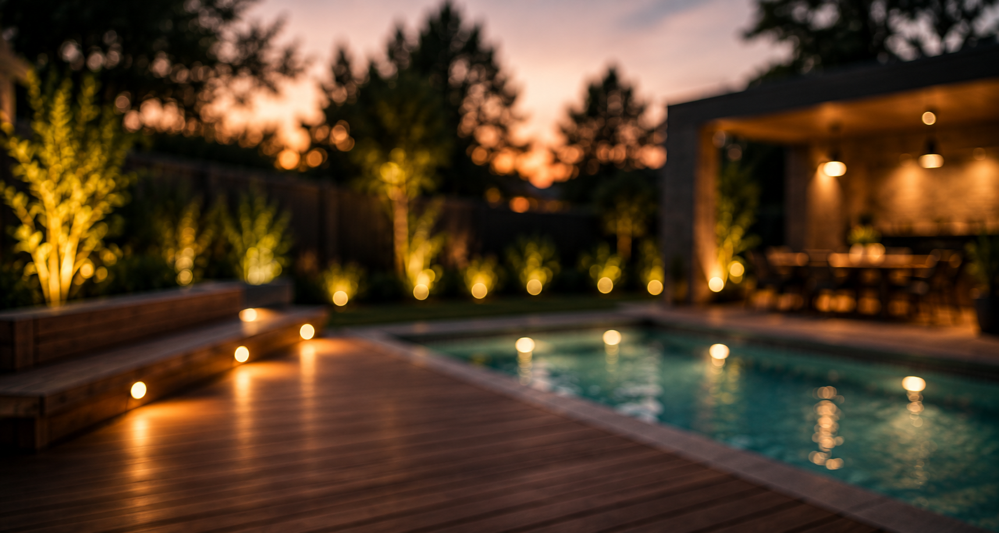
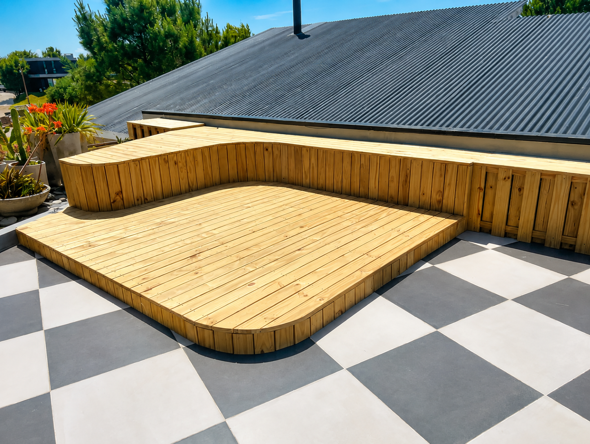
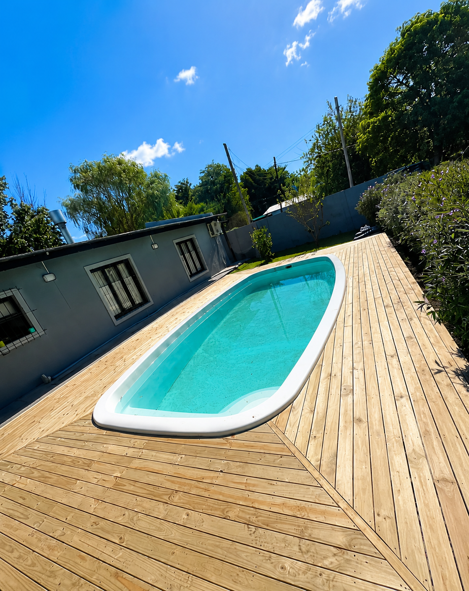
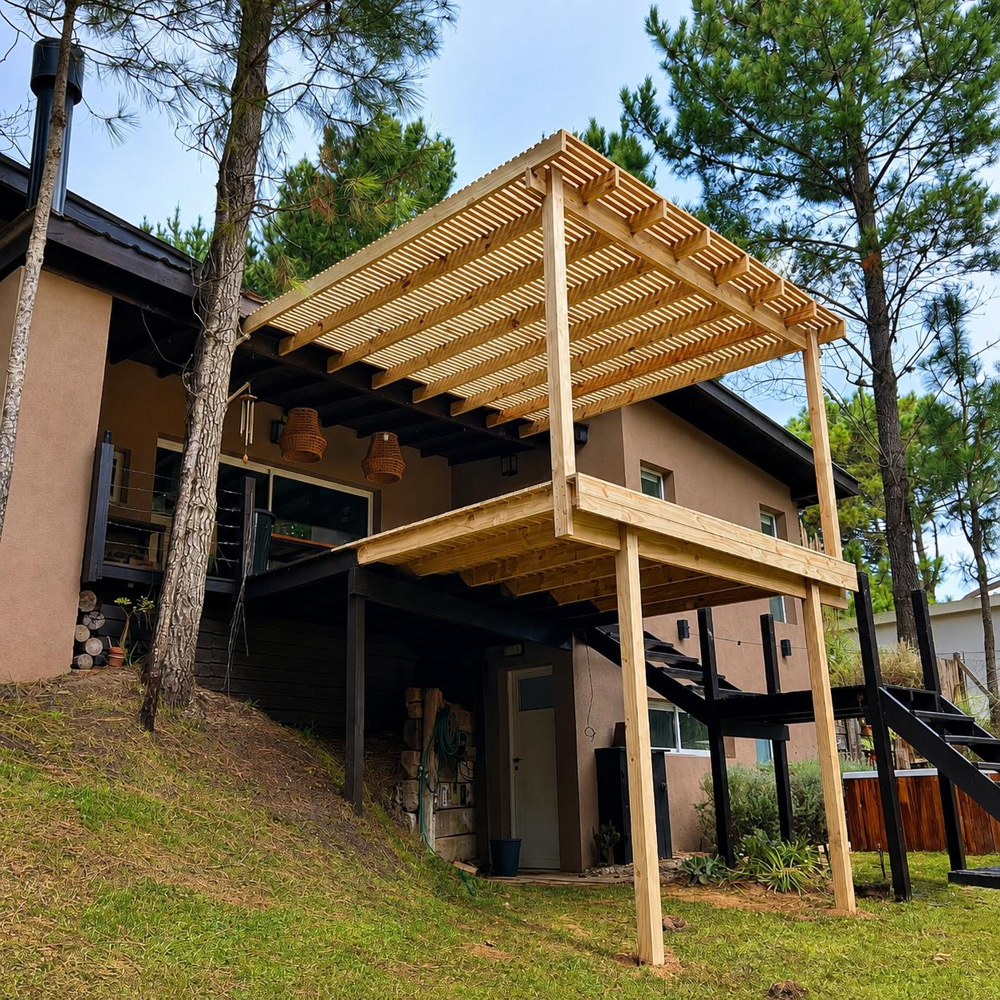
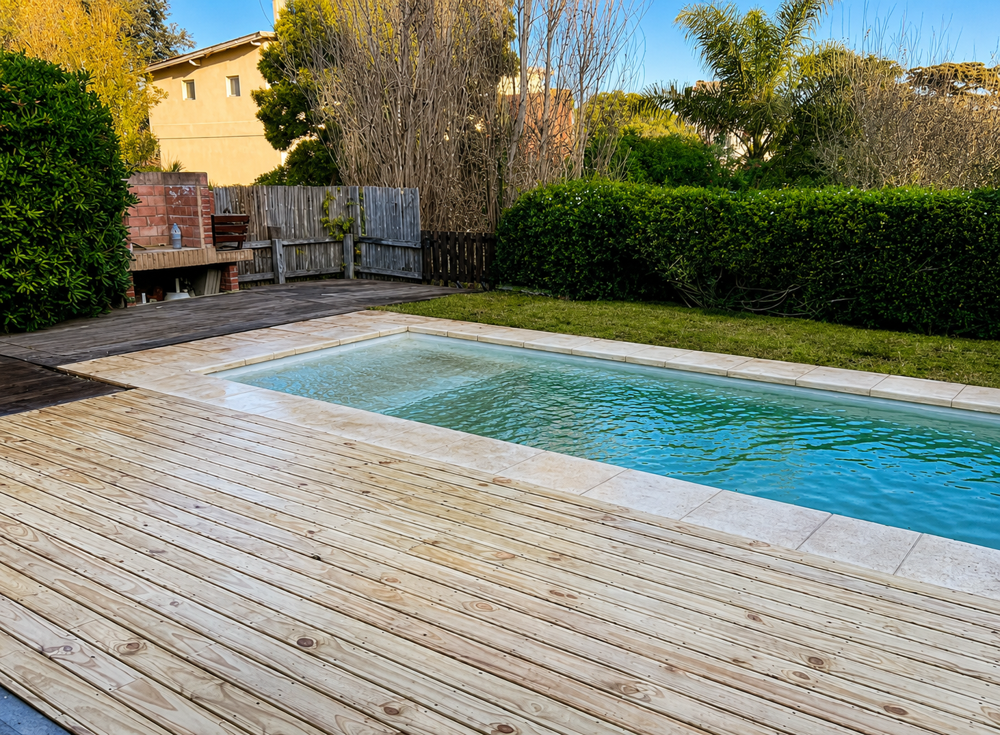
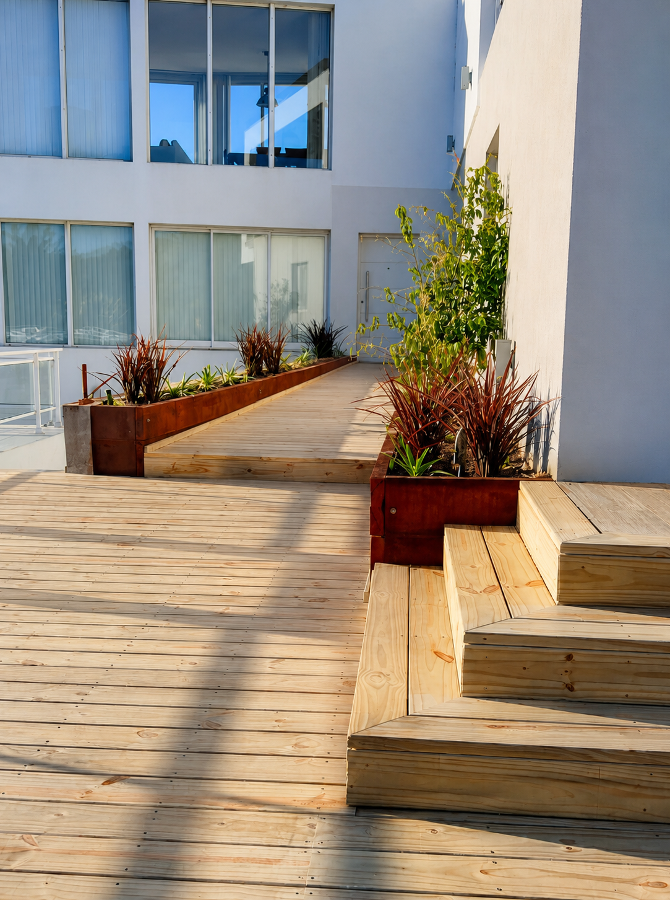
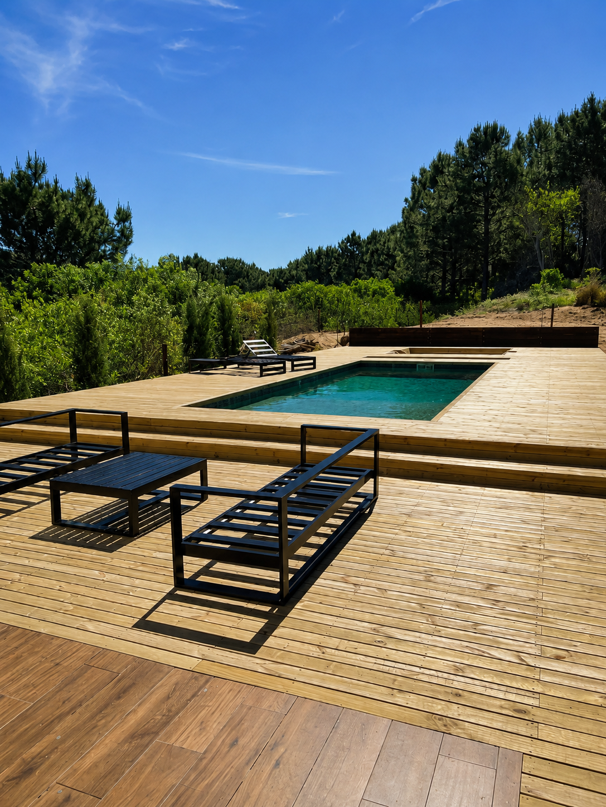

Construimos espacios para vivirlos
La calidez de la madera.
El oficio que permanece.
Diseñamos, construimos y renovamos exteriores con una mirada integral. Cada deck, pérgola y espacio verde nace del entorno y se resuelve con precisión.
Conocé nuestros servicios ↗Qué hacemos
01 — 03Soluciones que transforman
Naturaleza + diseño
Espacios que se integran
con su entorno.
Obra FC Mantenimiento
Obras seleccionadas
Empezar un proyecto ↗Trabajos con identidad







El carrusel se detiene al pasar el cursor. Hacé clic en una imagen para ampliarla.
Cómo trabajamos
Del boceto a la obraSimple, claro y a medida
- 01
Escuchamos
Visitamos el espacio, entendemos tus necesidades y relevamos cada detalle.
- 02
Proyectamos
Definimos materiales, solución constructiva, alcance y presupuesto.
- 03
Construimos
Coordinamos la obra con cuidado, orden y terminaciones precisas.